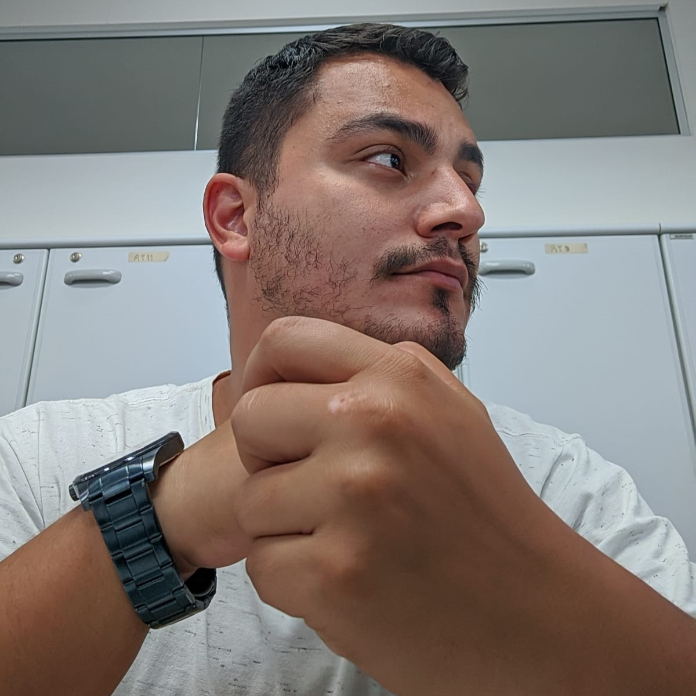
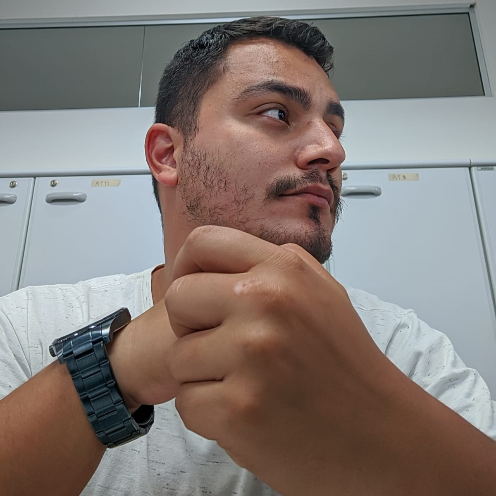

Gabriel Antunes | Quem sou eu
Formado como técnico em Refrigeração e Climatização desde 2012. Tenho atuado desde então como projetista e orçamentista.
Tenho 27 anos e faz algum tempo que tenho buscado um novo local de atuação. Tive contato com a progração no final de 2021 com algumas pessoas próximas que estavam começando atuar na área. Fiquei empolgado com as possibilidades desta profissão e principalmente com a dinâmica presente no dia-a-dia. Resolvi tentar o processo seletivo da Labenu e em janeiro de 2022 entrei na turma noturna de desenvolvedor web full stack, com duração de 1 ano. Estou ainda mais animado com as coisas que tenho aprendido.